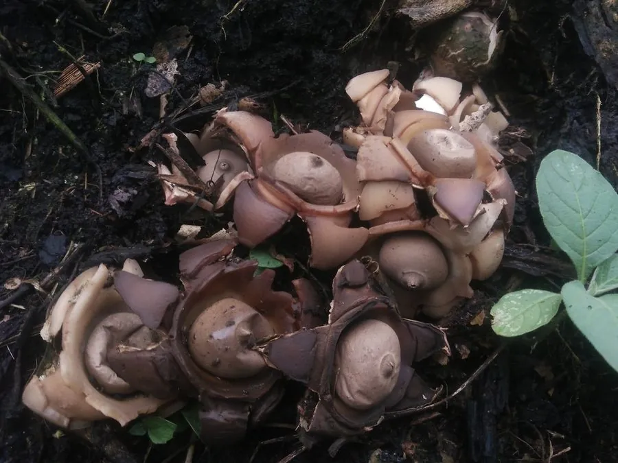

真菌 · 真菌界
尖顶地星 Geastrum triplex

尖顶地星的包被裂成星状向外翻卷，露出中央的球形孢子囊，顶端有一个尖嘴状孔口，形如小星星落在地上。
- 分类
- 门担子菌门纲伞菌纲目地星目科地星科属地星属
- 栖息环境
- 阔叶林与针叶林的腐殖质土壤，夏秋季散生或群生
- 地理分布
- 北半球温带与亚热带广泛分布，中国各地林区可见
- 保护级别
- 暂无评估（野生真菌）
物种志
尖顶地星是担子菌门地星目的真菌，子实体由外包被和内包被组成。幼时近球形，半埋于土中；成熟时外包被裂成 5–8 片尖角，呈星状向外翻卷，露出中央球形的内包被（孢子囊），直径 2–4 cm，顶部有尖嘴状的孔口，孢子成熟后从孔口喷出。内包被灰褐色，表面有细绒毛。
尖顶地星生于阔叶林或针叶林的腐殖质土壤上，夏秋季散生或群生，是林地中常见的腐生真菌。它以“星状开裂”的独特形态得名，外包被裂开后像一颗落在地上的小星星，十分好认。尖顶地星不可食用，质地坚硬、味道不佳；但其形态奇特，是自然观察和真菌摄影的常见对象。它的孢子靠雨水滴落或动物触碰从顶端孔口喷出，随风传播，在森林物质循环中扮演分解者的角色。
形态与习性
- 子实体外包被星状裂成 5–8 片
- 内包被球形，直径 2–4 cm
- 孔口顶端呈尖嘴状
- 孢子成熟后从孔口喷出
- 食用性不可食用
- 生境林地腐殖质土壤
趣味知识
- 尖顶地星成熟时外包被裂成星状，像一颗小星星落在地上。
- 它的孢子囊顶端有个尖嘴状孔口，孢子成熟后从中喷出。
- 尖顶地星不可食用，但形态奇特，是自然观察的好对象。